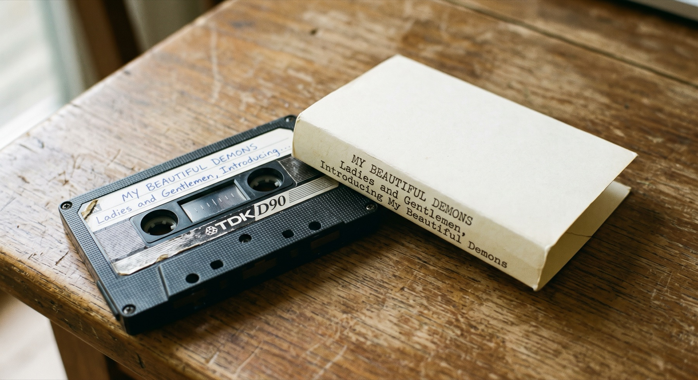
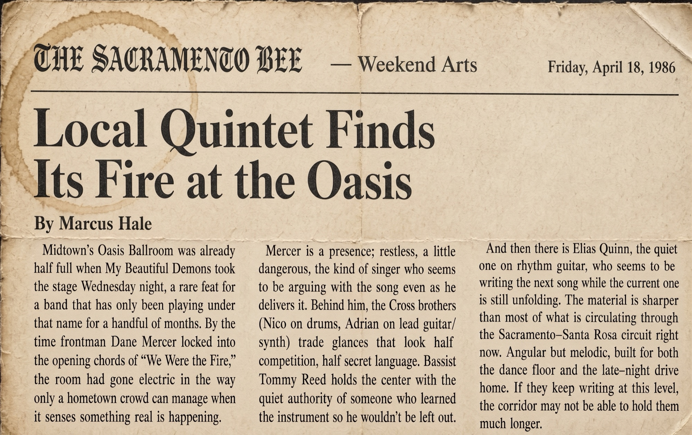
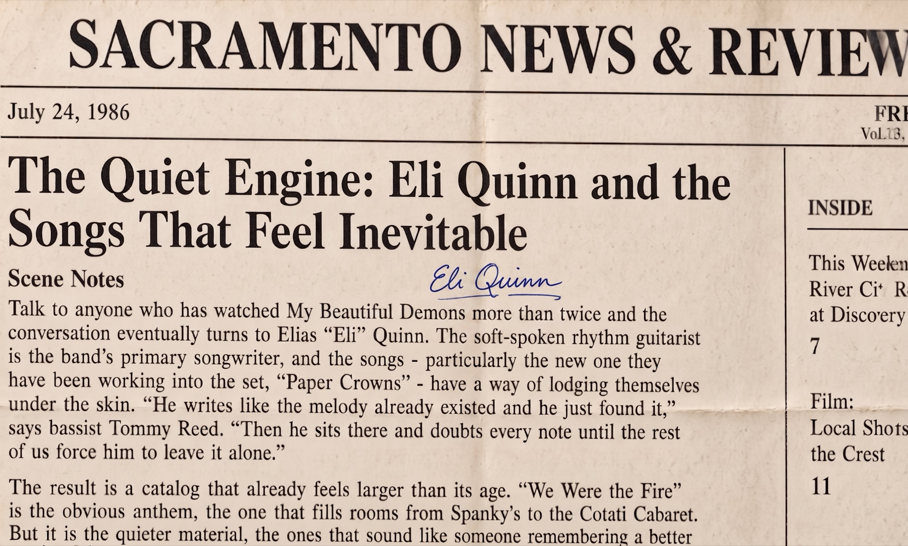
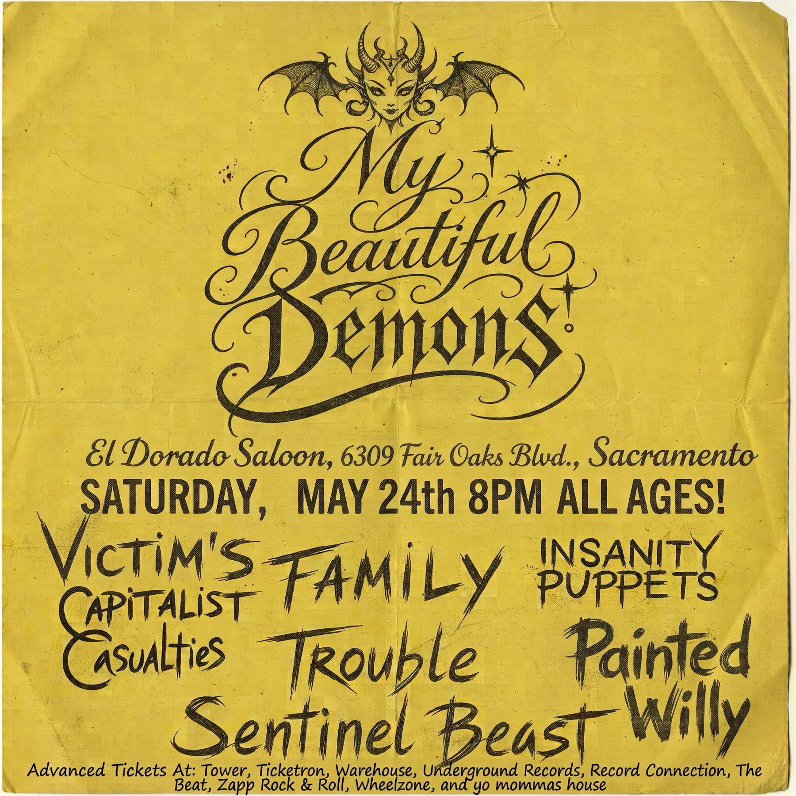
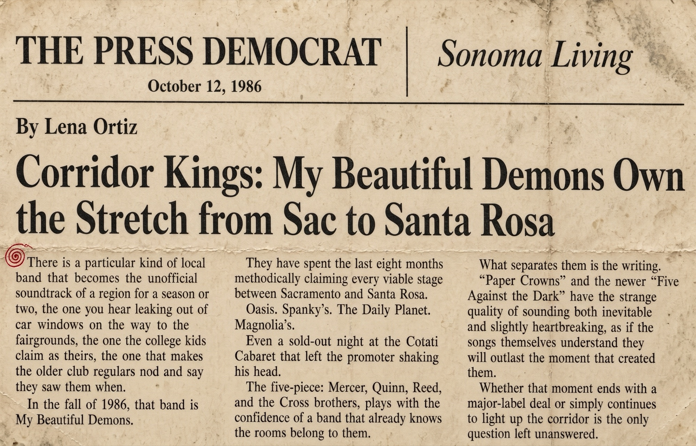

Documents
Flyers, notebook pages, cassette inserts, and clippings. Some of these are photocopies of photocopies. I have left them as they are.
MBD Demo

TDK D90 cassette and simple insert. Handwriting on the shell matches other labels in the collection. No accompanying set list or recording notes found with it.
The Sacramento Bee - Weekend Arts

Friday, April 18, 1986. “Local Quintet Finds Its Fire at the Oasis” by Marcus Hale. First-wave local press clipping from the Sacramento corridor.
MBD Binder Paper
Page from a spiral notebook. Blue ballpoint drawing of the band name and a small figure. No other writing on the sheet. Found loose among papers.
Sacramento News & Review

July 24, 1986. “The Quiet Engine: Eli Quinn and the Songs That Feel Inevitable.” Scene Notes clipping centered on Eli Quinn and the band's growing catalog.
El Dorado Saloon Flyer

Yellow photocopied flyer for a show at El Dorado Saloon, Sacramento. Date given as Saturday, May 24th. Multiple support acts listed. Typical of the local circuit flyers that survive in stacks.
The Press Democrat - Sonoma Living

October 12, 1986. “Corridor Kings: My Beautiful Demons Own the Stretch from Sac to Santa Rosa” by Lena Ortiz. Sonoma Living clipping from the band's regional peak.
More will be added as items are checked.